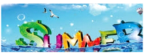
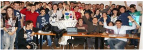

LEVEL #0 STARTS ON THE 5TH OF JULY
18/06/2014
The deadline for application is extended to the 3rd of July
software-university home-page softuni apply deadline application admission July
18/06/2014
The deadline for application is extended to the 3rd of July
software-university home-page softuni apply deadline application admission July
13/06/2014
software-university home-page softuni schedule summer-vacation exams
02/06/2014
Responses from the questionnaire about the usefulness of the first SoftUni Conf
software-university home-page softuni soft-uni conference feedback